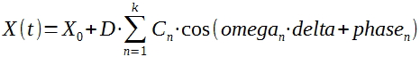
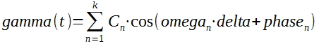

fix move/mesh command¶
Syntax¶
fix ID group-ID move/mesh mesh mesh-ID style args keyword values ...
- ID is documented in fix command, group-ID is ignored
- move/mesh = style name of this fix command
- mesh = obligatory keyword
- mesh-ID = ID for the fix mesh that the fix move/mesh is applied to
- style = linear or linear/variable or wiggle or riggle or rotate or rotate/variable or viblin or vibrot or file
linear args = Vx Vy Vz Vx,Vy,Vz = components of velocity vector (velocity units) linear/variable args = var_Vx var_Vy var_Vz var_Vx,var_Vy,var_Vz = variables specifying components of velocity vector (velocity units) wiggle args = amplitude Ax Ay Az period per amplitude = obligatory keyword Ax,Ay,Az = components of amplitude vector (distance units) period = obligatory keyword per = period of oscillation (time units) riggle args = origin Px Py Pz axis ax ay az period per amplitude ampl origin = obligatory keyword Px,Py,Pz = origin point of axis of rotation (distance units) axis = obligatory keyword ax,ay,az = axis of rotation vector (distance units) period = obligatory keyword per = period of rotation (time units)# amplitude = obligatory keyword ampl = amplitude of riggle movement (grad) rotate args = origin Px Py Pz axis ax ay az period per origin = obligatory keyword Px,Py,Pz = origin point of axis of rotation (distance units) axis = obligatory keyword ax,ay,az = axis of rotation vector (distance units) period = obligatory keyword per = period of rotation (time units) rotate/variable args = origin Px Py Pz axis ax ay az omega var_omega origin = obligatory keyword Px,Py,Pz = origin point of axis of rotation (distance units) axis = obligatory keyword ax,ay,az = axis of rotation vector (distance units) omega = obligatory keyword var_omega = variable specifying angular velocity (rad / time units) viblin args = axis ax ay az order n amplitude C1 ... Cn phase p1 ... pn period per axis = obligatory keyword ax,ay,az = components of moving direction vector (distance units)(origin 0 0 0) order= obligatory keyword n= order of trigonometric series n (from 1 to 30) amplitude = obligatory keyword C1, ..., Cn = amplitude (distance units) phase = obligatory keyword p1, ...,pn = phase of functionterm (rad) (number of terms is equivalent to order n) period = obligatory keyword per_1, ..., per_n = period of rotation (time units) vibrot args = origin Px Py Pz axis ax ay az order n amplitude C1 ... Cn phase p1 ... pn period per origin = obligatory keyword Px,Py,Pz = origin point of axis of rotation (distance units) axis = obligatory keyword ax,ay,az = axis of rotation vector order= obligatory keyword n= order of trigonometric series (from 1 to 30) amplitude = obligatory keyword C1, ..., Cn = amplitude (rad) phase = obligatory keyword p1, ...,pn = phase of functionterm (rad) (number of terms is equivalent to order n) period = obligatory keyword per_1, ..., per_n = period of rotation (time units)
file args = discussed on fix move/mesh file doc page (might not be available)
Examples¶
fix move all move/mesh mesh cad1 wiggle amplitude -0.1 0. 0. period 0.02
fix move all move/mesh mesh cad1 rotate origin 0. 0. 0. axis 0. 0. 1. period 0.05
fix move all move/mesh mesh cad1 linear 5. 5. 0.
fix move all move/mesh mesh cad1 viblin axis 0. 0. 1 order 5 amplitude 0.4 0.1 0.3 0.1 0.1 phase 1.3 2 0.4 0.1 0 period 0.02 0.07 0.035 0.023 0.0175
fix move all move/mesh mesh cad1 vibrot origin 0. 0. 0 axis 0. 0. 1 order 2 amplitude 0.4 0.1 phase 1.3 0 period 0.02 0.04
Description¶
Perform updates of position and velocity for mesh elements which are part of the fix_mesh_surface with ID mesh-ID using the specified settings or formulas. The fix group is ignored for this command.
The linear style moves mesh elements at a constant velocity, so that their position X = (x,y,z) as a function of time is given in vector notation as
X(t) = X0 + V * delta
where X0 = (x0,y0,z0) is their position at the time the fix is specified, V is the specified velocity vector with components (Vx,Vy,Vz), and delta is the time elapsed since the fix was specified. This style also sets the velocity of each atom to V = (Vx,Vy,Vz).
The linear/variable style does the same as the linear style, but uses three variables so that the velocity can be time-dependant.
The wiggle style moves atoms in an oscillatory fashion, so that their position X = (x,y,z) as a function of time is given in vector notation as
X(t) = X0 + A sin(omega*delta)
where X0 = (x0,y0,z0) is their position at the time the fix is specified, A is the specified amplitude vector with components (Ax,Ay,Az), omega is 2 PI / period, and delta is the time elapsed since the fix was specified. This style also sets the velocity of each element to the time derivative of this expression.
The rotate style rotates around a rotation axis R = (Rx,Ry,Rz) that goes thru a point P = (Px,Py,Pz). The period of the rotation is also specified. This style also sets the velocity of each element to (omega cross Rperp) where omega is its angular velocity around the rotation axis and Rperp is a perpendicular vector from the rotation axis to the atom. Note that the direction of rotation around the rotation axis is consistent with the right-hand rule: if your right-hand’s thumb points along R, then your fingers wrap around the axis in the direction of rotation.
The rotate/variable style does the same as the rotate style, but uses a variable for the angular velocity so that the angular velocity can be time-dependant. IMPORTANT NOTE: style rotate takes the period of the rotation as input, rotate/variable takes angular velocity as input.
The riggle style imposes an oscillatory rotation around a rotation axis R = (Rx,Ry,Rz) that goes thru a point P = (Px,Py,Pz). The period of the oscillation is specified as well as the amplitude in grad (°). This style also sets the velocity of each element accordingly.
The viblin style moves meshes in an oscillatory fashion with an vibration function of higher order, so that their position X = (x,y,z) as a function of time is given in vector notation as
where X0 = (x0,y0,z0) is their position at the time the fix is specified, n represents the order of the trigonometric series, Cn is the specified amplitude along the direction given by axis = (ax,ay,az). The vector D is the unit vector of axis. The angular velocity omega n is 2 PI / period n, and delta is the time elapsed since the fix was specified. This style also sets the velocity of each element to the time derivative of this expression.
The vibrot style generates an oscillatory rotation around a rotation axis = (ax,ay,az) that goes thru a point origin = (Px,Py,Pz). The period of the oscillation is used to calculate omega, the amplitudes Cn and the phase phase n are given in rad. The change of rotation angle per time gamma(t) is described by trigonometric series of order n. The formula for this change is
This style also sets the velocity of each element accordingly
Note
If a dangerous tri neighbor list build is detected, this may be due to the fact that the geometry is moved too close to a region where particle insertion is taking place so that initial interpenetration happens when the particles are inserted.
Note
When moving a mesh element, not only the node positions are moved but also a couple of other vectors. So moving one mesh element is more costly as one particle.
Superposition of multiple fix move/mesh commands:
It is possible to superpose multiple fix move/mesh commands. In this case, the reference frame for the second move command moves along as the mesh is moved by the first move command etc. E.g. for style rotate, the origin of the rotation axis would be in local reference frame.
Example: A mesh should rotate around a central axis and additionally revolve around its center of mass. The first move command should be the rotation around the central axis, the second move command the revolution around the center of mass of the mesh.
Note, because of this the order of these fixes is important. A rotate mover that comes before a linear mover would have a fixed center of rotation, whereas in the opposite case the center of rotation would move linearly with the object.
Restart, fix_modify, output, run start/stop, minimize info¶
This fix writes the original coordinates of moving elements to binary restart files, so that the motion can be continuous in a restarted simulation. See the read_restart command for info on how to re-specify a fix in an input script that reads a restart file, so that the operation of the fix continues in an uninterrupted fashion.
None of the fix_modify options are relevant to this fix.
No parameter of this fix can be used with the start/stop keywords of
the run command. This fix is not invoked during energy minimization.
Restrictions¶
If multiple fix move/mesh movements are superposed onto one mesh, they have to be deleted in reverse order of their creation Mesh elements may not be deleted in case due to leaving the simulation box for a fixed boundary. In this case, an error is generated. See boundary command for details.